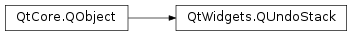

QUndoStack¶
Synopsis¶
Functions¶
- def
beginMacro(text) - def
canRedo() - def
canUndo() - def
cleanIndex() - def
clear() - def
command(index) - def
count() - def
createRedoAction(parent[, prefix=”“]) - def
createUndoAction(parent[, prefix=”“]) - def
endMacro() - def
index() - def
isActive() - def
isClean() - def
push(cmd) - def
redoText() - def
setUndoLimit(limit) - def
text(idx) - def
undoLimit() - def
undoText()
Slots¶
Signals¶
- def
canRedoChanged(canRedo) - def
canUndoChanged(canUndo) - def
cleanChanged(clean) - def
indexChanged(idx) - def
redoTextChanged(redoText) - def
undoTextChanged(undoText)
Detailed Description¶
The
PySide2.QtWidgets.QUndoStackclass is a stack ofPySide2.QtWidgets.QUndoCommandobjects.For an overview of Qt’s Undo Framework, see the overview document.
An undo stack maintains a stack of commands that have been applied to a document.
New commands are pushed on the stack using
PySide2.QtWidgets.QUndoStack.push(). Commands can be undone and redone usingPySide2.QtWidgets.QUndoStack.undo()andPySide2.QtWidgets.QUndoStack.redo(), or by triggering the actions returned byPySide2.QtWidgets.QUndoStack.createUndoAction()andPySide2.QtWidgets.QUndoStack.createRedoAction().
PySide2.QtWidgets.QUndoStackkeeps track of thecurrentcommand. This is the command which will be executed by the next call toPySide2.QtWidgets.QUndoStack.redo(). The index of this command is returned byPySide2.QtWidgets.QUndoStack.index(). The state of the edited object can be rolled forward or back usingPySide2.QtWidgets.QUndoStack.setIndex(). If the top-most command on the stack has already been redone,PySide2.QtWidgets.QUndoStack.index()is equal toPySide2.QtWidgets.QUndoStack.count().
PySide2.QtWidgets.QUndoStackprovides support for undo and redo actions, command compression, command macros, and supports the concept of a clean state .
Undo and Redo Actions¶
PySide2.QtWidgets.QUndoStackprovides convenient undo and redoPySide2.QtWidgets.QActionobjects, which can be inserted into a menu or a toolbar. When commands are undone or redone,PySide2.QtWidgets.QUndoStackupdates the text properties of these actions to reflect what change they will trigger. The actions are also disabled when no command is available for undo or redo. These actions are returned byQUndoStack.createUndoAction()andQUndoStack.createRedoAction().
Command Compression and Macros¶
Command compression is useful when several commands can be compressed into a single command that can be undone and redone in a single operation. For example, when a user types a character in a text editor, a new command is created. This command inserts the character into the document at the cursor position. However, it is more convenient for the user to be able to undo or redo typing of whole words, sentences, or paragraphs. Command compression allows these single-character commands to be merged into a single command which inserts or deletes sections of text. For more information, see
QUndoCommand.mergeWith()andPySide2.QtWidgets.QUndoStack.push().A command macro is a sequence of commands, all of which are undone and redone in one go. Command macros are created by giving a command a list of child commands. Undoing or redoing the parent command will cause the child commands to be undone or redone. Command macros may be created explicitly by specifying a parent in the
PySide2.QtWidgets.QUndoCommandconstructor, or by using the convenience functionsPySide2.QtWidgets.QUndoStack.beginMacro()andPySide2.QtWidgets.QUndoStack.endMacro().Although command compression and macros appear to have the same effect to the user, they often have different uses in an application. Commands that perform small changes to a document may be usefully compressed if there is no need to individually record them, and if only larger changes are relevant to the user. However, for commands that need to be recorded individually, or those that cannot be compressed, it is useful to use macros to provide a more convenient user experience while maintaining a record of each command.
Clean State¶
PySide2.QtWidgets.QUndoStacksupports the concept of a clean state. When the document is saved to disk, the stack can be marked as clean usingPySide2.QtWidgets.QUndoStack.setClean(). Whenever the stack returns to this state through undoing and redoing commands, it emits the signalPySide2.QtWidgets.QUndoStack.cleanChanged(). This signal is also emitted when the stack leaves the clean state. This signal is usually used to enable and disable the save actions in the application, and to update the document’s title to reflect that it contains unsaved changes.
Obsolete Commands¶
PySide2.QtWidgets.QUndoStackis able to delete commands from the stack if the command is no longer needed. One example may be to delete a command when two commands are merged together in such a way that the merged command has no function. This can be seen with move commands where the user moves their mouse to one part of the screen and then moves it to the original position. The merged command results in a mouse movement of 0. This command can be deleted since it serves no purpose. Another example is with networking commands that fail due to connection issues. In this case, the command is to be removed from the stack because thePySide2.QtWidgets.QUndoStack.redo()andPySide2.QtWidgets.QUndoStack.undo()functions have no function since there was connection issues.A command can be marked obsolete with the
QUndoCommand.setObsolete()function. TheQUndoCommand.isObsolete()flag is checked inQUndoStack.push(),QUndoStack.undo(),QUndoStack.redo(), andQUndoStack.setIndex()after callingQUndoCommand.undo(),QUndoCommand.redo()andPySide2.QtWidgets.QUndoCommand:mergeWith() where applicable.If a command is set obsolete and the clean index is greater than or equal to the current command index, then the clean index will be reset when the command is deleted from the stack.
-
class
PySide2.QtWidgets.QUndoStack([parent=nullptr])¶ Parameters: parent – PySide2.QtCore.QObjectConstructs an empty undo stack with the parent
parent. The stack will initially be in the clean state. Ifparentis aPySide2.QtWidgets.QUndoGroupobject, the stack is automatically added to the group.See also
-
PySide2.QtWidgets.QUndoStack.beginMacro(text)¶ Parameters: text – unicode Begins composition of a macro command with the given
textdescription.An empty command described by the specified
textis pushed on the stack. Any subsequent commands pushed on the stack will be appended to the empty command’s children untilPySide2.QtWidgets.QUndoStack.endMacro()is called.Calls to and
PySide2.QtWidgets.QUndoStack.endMacro()may be nested, but every call to must have a matching call toPySide2.QtWidgets.QUndoStack.endMacro().While a macro is being composed, the stack is disabled. This means that:
PySide2.QtWidgets.QUndoStack.indexChanged()andPySide2.QtWidgets.QUndoStack.cleanChanged()are not emitted,PySide2.QtWidgets.QUndoStack.canUndo()andPySide2.QtWidgets.QUndoStack.canRedo()return false,- calling
PySide2.QtWidgets.QUndoStack.undo()orPySide2.QtWidgets.QUndoStack.redo()has no effect, - the undo/redo actions are disabled.
The stack becomes enabled and appropriate signals are emitted when
PySide2.QtWidgets.QUndoStack.endMacro()is called for the outermost macro.stack.beginMacro("insert red text") stack.push(InsertText(document, idx, text)) stack.push(SetColor(document, idx, text.length(), Qt.red)) stack.endMacro() # indexChanged() is emitted
This code is equivalent to:
insertRed = QUndoCommand() # an empty command insertRed.setText("insert red text") InsertText(document, idx, text, insertRed) # becomes child of insertRed SetColor(document, idx, text.length(), Qt.red, insertRed) stack.push(insertRed)
-
PySide2.QtWidgets.QUndoStack.canRedo()¶ Return type: PySide2.QtCore.boolReturns
trueif there is a command available for redo; otherwise returnsfalse.This function returns
falseif the stack is empty or if the top command on the stack has already been redone.Synonymous with
PySide2.QtWidgets.QUndoStack.index()==PySide2.QtWidgets.QUndoStack.count().
-
PySide2.QtWidgets.QUndoStack.canRedoChanged(canRedo)¶ Parameters: canRedo – PySide2.QtCore.bool
-
PySide2.QtWidgets.QUndoStack.canUndo()¶ Return type: PySide2.QtCore.boolReturns
trueif there is a command available for undo; otherwise returnsfalse.This function returns
falseif the stack is empty, or if the bottom command on the stack has already been undone.Synonymous with
PySide2.QtWidgets.QUndoStack.index()== 0.
-
PySide2.QtWidgets.QUndoStack.canUndoChanged(canUndo)¶ Parameters: canUndo – PySide2.QtCore.bool
-
PySide2.QtWidgets.QUndoStack.cleanChanged(clean)¶ Parameters: clean – PySide2.QtCore.bool
-
PySide2.QtWidgets.QUndoStack.cleanIndex()¶ Return type: PySide2.QtCore.intReturns the clean index. This is the index at which
PySide2.QtWidgets.QUndoStack.setClean()was called.A stack may not have a clean index. This happens if a document is saved, some commands are undone, then a new command is pushed. Since
PySide2.QtWidgets.QUndoStack.push()deletes all the undone commands before pushing the new command, the stack can’t return to the clean state again. In this case, this function returns -1. The -1 may also be returned after an explicit call toPySide2.QtWidgets.QUndoStack.resetClean().
-
PySide2.QtWidgets.QUndoStack.clear()¶ Clears the command stack by deleting all commands on it, and returns the stack to the clean state.
Commands are not undone or redone; the state of the edited object remains unchanged.
This function is usually used when the contents of the document are abandoned.
See also
PySide2.QtWidgets.QUndoStack.QUndoStack()
-
PySide2.QtWidgets.QUndoStack.command(index)¶ Parameters: index – PySide2.QtCore.intReturn type: PySide2.QtWidgets.QUndoCommandReturns a const pointer to the command at
index.This function returns a const pointer, because modifying a command, once it has been pushed onto the stack and executed, almost always causes corruption of the state of the document, if the command is later undone or redone.
See also
-
PySide2.QtWidgets.QUndoStack.count()¶ Return type: PySide2.QtCore.intReturns the number of commands on the stack. Macro commands are counted as one command.
-
PySide2.QtWidgets.QUndoStack.createRedoAction(parent[, prefix=""])¶ Parameters: - parent –
PySide2.QtCore.QObject - prefix – unicode
Return type: Creates an redo
PySide2.QtWidgets.QActionobject with the givenparent.Triggering this action will cause a call to
PySide2.QtWidgets.QUndoStack.redo(). The text of this action is the text of the command which will be redone in the next call toPySide2.QtWidgets.QUndoStack.redo(), prefixed by the specifiedprefix. If there is no command available for redo, this action will be disabled.If
prefixis empty, the default template “Redo %1” is used instead of prefix. Before Qt 4.8, the prefix “Redo” was used by default.- parent –
-
PySide2.QtWidgets.QUndoStack.createUndoAction(parent[, prefix=""])¶ Parameters: - parent –
PySide2.QtCore.QObject - prefix – unicode
Return type: Creates an undo
PySide2.QtWidgets.QActionobject with the givenparent.Triggering this action will cause a call to
PySide2.QtWidgets.QUndoStack.undo(). The text of this action is the text of the command which will be undone in the next call toPySide2.QtWidgets.QUndoStack.undo(), prefixed by the specifiedprefix. If there is no command available for undo, this action will be disabled.If
prefixis empty, the default template “Undo %1” is used instead of prefix. Before Qt 4.8, the prefix “Undo” was used by default.- parent –
-
PySide2.QtWidgets.QUndoStack.endMacro()¶ Ends composition of a macro command.
If this is the outermost macro in a set nested macros, this function emits
PySide2.QtWidgets.QUndoStack.indexChanged()once for the entire macro command.
-
PySide2.QtWidgets.QUndoStack.index()¶ Return type: PySide2.QtCore.intReturns the index of the current command. This is the command that will be executed on the next call to
PySide2.QtWidgets.QUndoStack.redo(). It is not always the top-most command on the stack, since a number of commands may have been undone.
-
PySide2.QtWidgets.QUndoStack.indexChanged(idx)¶ Parameters: idx – PySide2.QtCore.int
-
PySide2.QtWidgets.QUndoStack.isActive()¶ Return type: PySide2.QtCore.bool
-
PySide2.QtWidgets.QUndoStack.isClean()¶ Return type: PySide2.QtCore.boolIf the stack is in the clean state, returns
true; otherwise returnsfalse.
-
PySide2.QtWidgets.QUndoStack.push(cmd)¶ Parameters: cmd – PySide2.QtWidgets.QUndoCommandPushes
cmdon the stack or merges it with the most recently executed command. In either case, executescmdby calling itsPySide2.QtWidgets.QUndoStack.redo()function.If
cmd‘s id is not -1, and if the id is the same as that of the most recently executed command,PySide2.QtWidgets.QUndoStackwill attempt to merge the two commands by callingQUndoCommand.mergeWith()on the most recently executed command. IfQUndoCommand.mergeWith()returnstrue,cmdis deleted.After calling
QUndoCommand.redo()and, if applicable,QUndoCommand.mergeWith(),QUndoCommand.isObsolete()will be called forcmdor the merged command. IfQUndoCommand.isObsolete()returnstrue, thencmdor the merged command will be deleted from the stack.In all other cases
cmdis simply pushed on the stack.If commands were undone before
cmdwas pushed, the current command and all commands above it are deleted. Hencecmdalways ends up being the top-most on the stack.Once a command is pushed, the stack takes ownership of it. There are no getters to return the command, since modifying it after it has been executed will almost always lead to corruption of the document’s state.
-
PySide2.QtWidgets.QUndoStack.redo()¶ Redoes the current command by calling
QUndoCommand.redo(). Increments the current command index.If the stack is empty, or if the top command on the stack has already been redone, this function does nothing.
If
QUndoCommand.isObsolete()returns true for the current command, then the command will be deleted from the stack. Additionally, if the clean index is greater than or equal to the current command index, then the clean index is reset.
-
PySide2.QtWidgets.QUndoStack.redoText()¶ Return type: unicode Returns the text of the command which will be redone in the next call to
PySide2.QtWidgets.QUndoStack.redo().
-
PySide2.QtWidgets.QUndoStack.redoTextChanged(redoText)¶ Parameters: redoText – unicode
-
PySide2.QtWidgets.QUndoStack.resetClean()¶ Leaves the clean state and emits
PySide2.QtWidgets.QUndoStack.cleanChanged()if the stack was clean. This method resets the clean index to -1.This is typically called in the following cases, when a document has been:
- created basing on some template and has not been saved, so no filename has been associated with the document yet.
- restored from a backup file.
- changed outside of the editor and the user did not reload it.
-
PySide2.QtWidgets.QUndoStack.setActive([active=true])¶ Parameters: active – PySide2.QtCore.bool
-
PySide2.QtWidgets.QUndoStack.setClean()¶ Marks the stack as clean and emits
PySide2.QtWidgets.QUndoStack.cleanChanged()if the stack was not already clean.This is typically called when a document is saved, for example.
Whenever the stack returns to this state through the use of undo/redo commands, it emits the signal
PySide2.QtWidgets.QUndoStack.cleanChanged(). This signal is also emitted when the stack leaves the clean state.
-
PySide2.QtWidgets.QUndoStack.setIndex(idx)¶ Parameters: idx – PySide2.QtCore.intRepeatedly calls
PySide2.QtWidgets.QUndoStack.undo()orPySide2.QtWidgets.QUndoStack.redo()until the current command index reachesidx. This function can be used to roll the state of the document forwards of backwards.PySide2.QtWidgets.QUndoStack.indexChanged()is emitted only once.
-
PySide2.QtWidgets.QUndoStack.setUndoLimit(limit)¶ Parameters: limit – PySide2.QtCore.int
-
PySide2.QtWidgets.QUndoStack.text(idx)¶ Parameters: idx – PySide2.QtCore.intReturn type: unicode Returns the text of the command at index
idx.
-
PySide2.QtWidgets.QUndoStack.undo()¶ Undoes the command below the current command by calling
QUndoCommand.undo(). Decrements the current command index.If the stack is empty, or if the bottom command on the stack has already been undone, this function does nothing.
After the command is undone, if
QUndoCommand.isObsolete()returnstrue, then the command will be deleted from the stack. Additionally, if the clean index is greater than or equal to the current command index, then the clean index is reset.
-
PySide2.QtWidgets.QUndoStack.undoLimit()¶ Return type: PySide2.QtCore.int
-
PySide2.QtWidgets.QUndoStack.undoText()¶ Return type: unicode Returns the text of the command which will be undone in the next call to
PySide2.QtWidgets.QUndoStack.undo().
-
PySide2.QtWidgets.QUndoStack.undoTextChanged(undoText)¶ Parameters: undoText – unicode
© 2018 The Qt Company Ltd. Documentation contributions included herein are the copyrights of their respective owners. The documentation provided herein is licensed under the terms of the GNU Free Documentation License version 1.3 as published by the Free Software Foundation. Qt and respective logos are trademarks of The Qt Company Ltd. in Finland and/or other countries worldwide. All other trademarks are property of their respective owners.